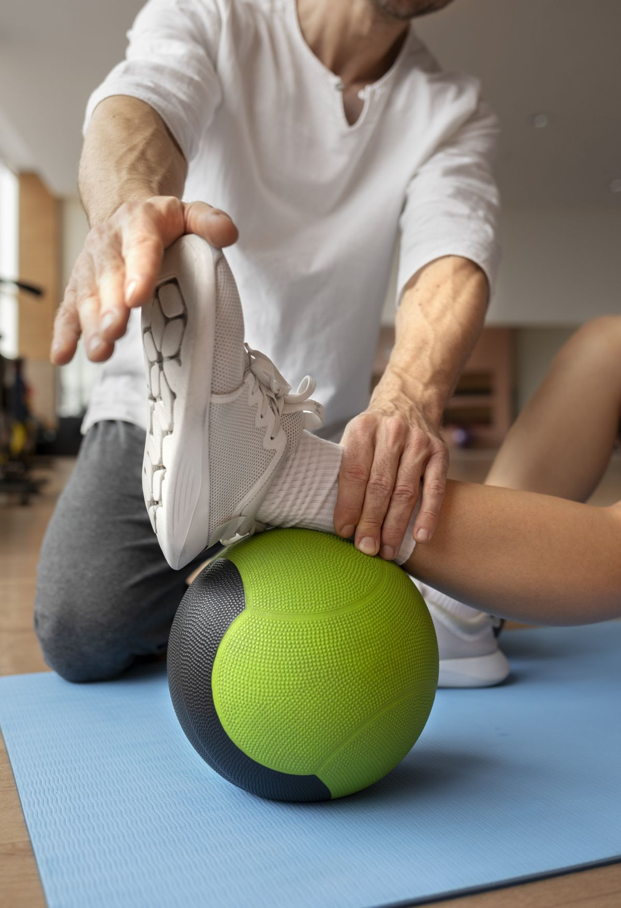
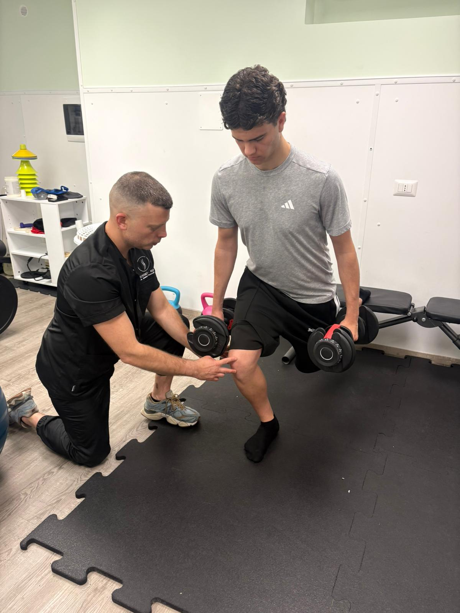

Un infortunio o un dolore durante l’attività fisica possono interrompere gli allenamenti e limitare le tue prestazioni. Scopri come la fisioterapia può accompagnarti nel recupero, aiutandoti a ritrovare movimento, forza e funzionalità per tornare gradualmente allo sport.


È l’ambito della fisioterapia che si occupa della gestione dei disturbi muscolo-scheletrici legati all’attività fisica e del recupero dopo un infortunio. Si rivolge a chi pratica sport a livello amatoriale e agli atleti, con percorsi calibrati sulle esigenze individuali.
Distorsioni, stiramenti e lesioni muscolari, tendinopatie e dolori articolari sono alcune delle problematiche che possono interessare chi pratica sport. Sintomi e tempi di recupero dipendono dal tipo e dalla gravità dell’infortunio: una valutazione individuale aiuta a definire i passi successivi.
Dopo una valutazione, pssiamo definire un programma personalizzato che integra esercizio terapeutico, recupero della mobilità, rinforzo muscolare e lavoro funzionale. Il percorso viene adattato alla problematica, ai progressi e agli obiettivi sportivi, rispettando le indicazioni mediche.

“ Matteo è una di quelle persone che riesce a garantirti un percorso che in maniera veloce porta risultati e riporta l’atleta alla performance sportiva. ”
Raccontaci la tua situazione e richiedi informazioni su un percorso di fisioterapia e recupero sportivo costruito sulle tue esigenze e sui tuoi obiettivi.